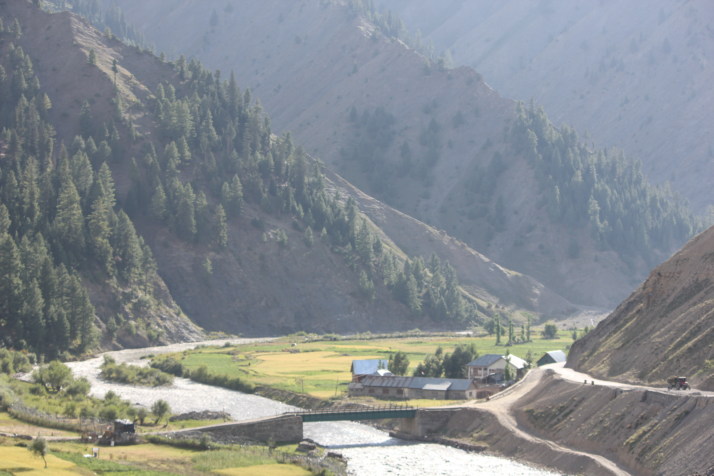
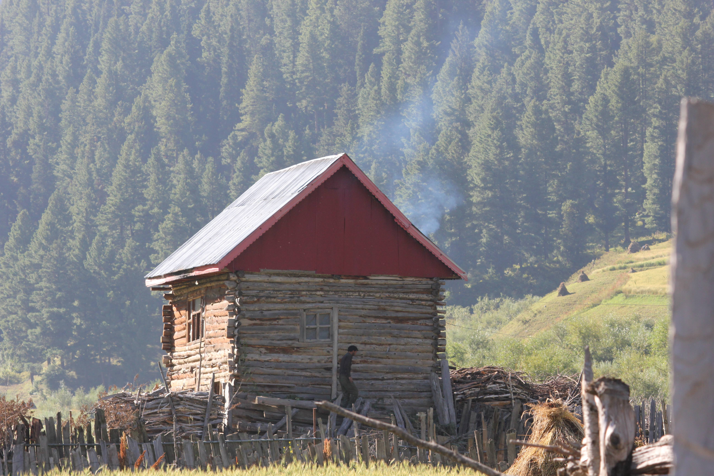
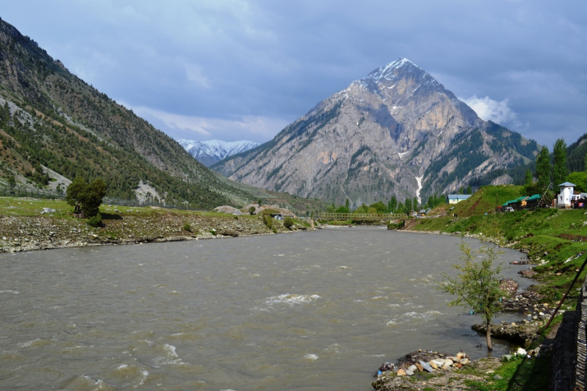
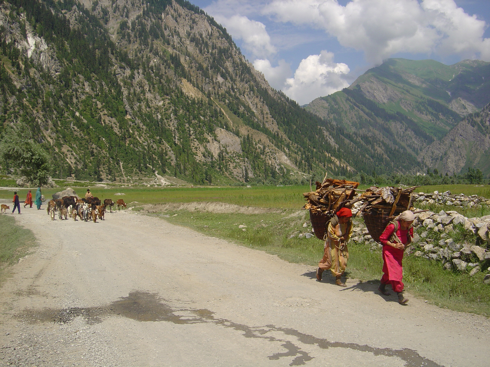
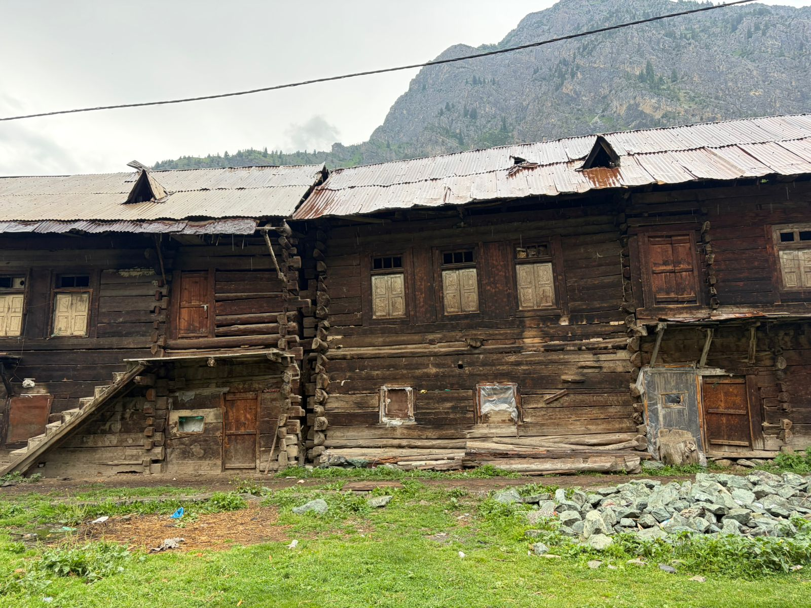
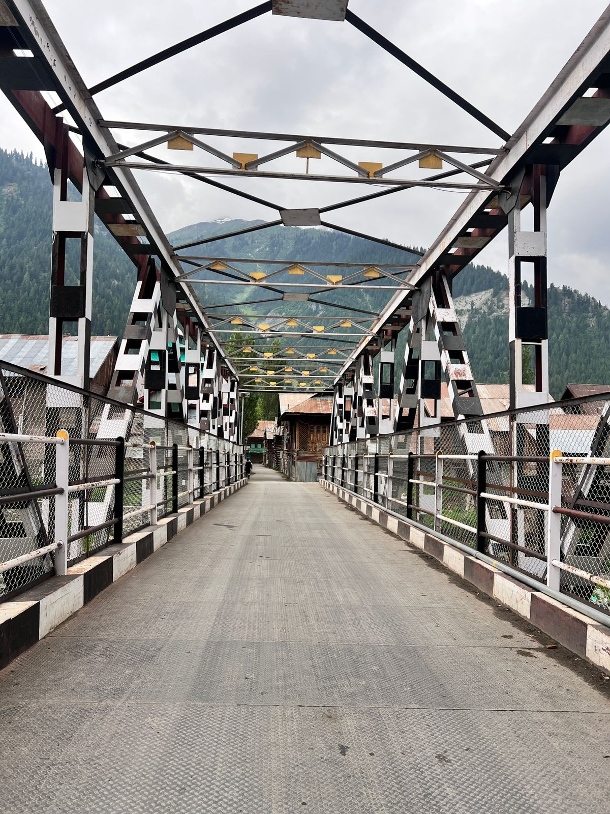
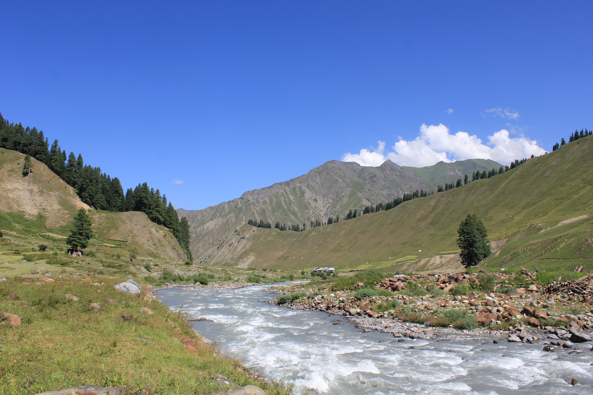

Himalayan Exploration & Tourism
An untouchable oasis of breathtaking emerald meadows, towering pyramid peaks, ancient Dardic culture, and crystal-clear Himalayan waters in Bandipora, Jammu & Kashmir.
Located in the northern tip of Bandipora district, Kashmir, situated at an altitude of approximately 8,000 feet (2,400 meters) surrounded by snow-capped peaks.
The sole high-mountain road link connects Srinagar via Bandipora to Gurez. High snowfall shuts Razdan Pass during peak winter (Dec–April), preserving its pristine isolation.
Dense pine forests, sub-alpine meadows, and pristine valleys home to rare wildlife like the Himalayan Brown Bear and Snow Leopard.

The turquoise Kishanganga River (known as the Neelum River across the border) flows right through the length of Gurez Valley, providing nourishment to pastures and framing its scenic landscapes.
Ideal for white-water rafting, riverbank camping, and brown trout fly-fishing amidst pristine mountain wilderness.

Rising majestically above Dawar town, the mountain's sharp triangular profile is the definitive symbol of Gurez Valley.
Named after Habba Khatoon (16th-century 'Nightingale of Kashmir'), a peasant poetess who married King Yousuf Shah Chak. Legend holds she sang mournful love songs here after he was exiled.
A crystal-clear natural spring gushes out at the base of the peak, believed to flow from the tears of the heartbroken poet queen.

Gurez is home to the ancient **Dardic tribe**, descendants of the Indo-Aryan Dards who migrated across the high Karakoram and Himalayan ranges centuries ago.
The local population speaks Shina, a distinct Dardic language set apart from Kashmiri, preserving ancient linguistic roots.
Vibrant hand-embroidered woolen gowns, woolen caps (*Khoi*), intricate jewelry, and traditional handicrafts built for harsh winter conditions.
A warm, community-centered society known for agrarian livestock farming, folk storytelling, and authentic mountain hospitality.

Villages in Gurez feature unique, earthquake-resistant log cabins constructed entirely from Deodar and Pine timber logs stacked horizontally.
Designed with thick mud-plastered walls and steep gabled tin/wooden roofs to withstand 10 to 15 feet of heavy winter snowfall.
Efforts are underway to preserve these rustic log structures as heritage sites and homestays for eco-conscious travelers.

The central hub and township of Gurez. Offers local bazaars, government services, homestays, and panoramic views of Habba Khatoon.
Located further east towards Dras and Kargil. Tulail is even more remote, featuring untouched hamlets like Sheikhpura, Barnai, and Bagtore.
Idyllic agrarian hamlets surrounded by potato fields, barley crops, and pristine pine groves along the riverbanks.

Gurez was a vital branch of the ancient Silk Route, connecting the Valley of Kashmir with Gilgit, Kashgar, and Central Asia.
Archaeological evidence and ancient rock carvings in nearby Sharda (now across LOC) reveal its role as a seat of learning and pilgrimage.
After decades of border restrictions, peace and stability have opened Gurez as one of India's safest and most rewarded offbeat destinations.

Popular base for alpine lake treks including Satsar Lake, Patalwan Lake, and Gangabal. Camping under starry mountain skies is an unforgettable experience.
The Kishanganga River offers world-class brown trout fishing (permit required) and thrilling white-water rafting opportunities during spring/summer.
Best Time: May to October.
Route: Srinagar → Bandipora → Razdan Pass → Dawar (125 km).
Permits: E-permits/IDs required at army checkpoints.
Recognized nationally as one of the best offbeat tourist destinations in India, striking a balance between tourism growth and nature conservation.
Emphasizing community homestays, zero-plastic initiatives, and preserving the delicate alpine ecosystem and Dardic traditions.
Gurez remains a tranquil sanctuary where timeless nature, poetic history, and warm mountain people converge.